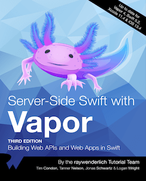

主页
为什么要写这个教程
因为之前使用Python的Web开发框架Flask写过一段时间的服务，写的过程中是通过看一个名叫Flask大型教程的系列博客学习的， 觉得作者写的很好，也让我感受到了写Web页面和后端服务的乐趣。
我同时也是一名iOS开发者，对苹果公司开发的编程语言Swift也有非常浓厚的兴趣，了解到Swift也可以用来写服务端，就尝试比较了几种流行的框架，包括Kitura、Perfect和Vapor，其中Kitura是IBM推出的商业化开发框架，Perfect是一个功能非常完善也有些复杂的开源框架，Vapor是一个使用纯Swift实现的开源框架，三者在GitHub上的星也不少，可以说是目前主流的Swift服务端开发框架了。那么我为什么独独对Vapor这个框架产生了兴趣呢？
对Vapor有好感，主要是因为它的官网非常简洁，框架使用纯Swift实现，同时它的社区非常活跃，项目不是太大，对于我这种不需要太复杂功能的开发者来说刚好。
选择Vapor主要是因为我喜欢简单的东西。🤣 我觉得官网可以体现出开发团队的水平，简单的东西总是让人喜欢。
Vapor是一个用Swift语言写的开源框架，基于苹果的SwiftNIO库。可以用来构建：后端服务、Web网页。
Tanner Nelson在2016年1月启动了Vapor项目，很快Logan Wright加入了。之后有很多的人加入了Vapor的开发者社区，因为Vapor使用了Swift风格的API和大量的语言特性，很快在GitHub上成为了流行的服务端Swift框架。随着Swift语言的开源，Vapor也被合并入Swift Server Group，成为了苹果支持的服务端开发框架。
Vapor包含一些组件，其中Leaf是一个开发前端页面使用的模板语言组件，Fluent是一个Swift写的对象关系映射(ORM)框架。Vapor的开发者社区非常活跃，从Discord的讨论频道可以看出来。
怎样学习Vapor
- 看教程，写代码
- 看文档，写代码
- 看源码，写代码
要动手 写代码，理论配合实践才能比较扎实的掌握。
本教程的主要内容来自图书《Server Side Swift With Vapor》其中大部分是Vapor的核心成员写的，他们知道怎样才能更好的使用Vapor。

按照IT人拿起键盘就是干的风格，下一节就是环境配置了。这个过程你可以看到Vapor的简洁的特点。
使用Swift的好处
- Swift是强静态类型语言，可以减少应用在运行期的崩溃
- Swift是编译型语言，比解释型语言性能好
- Swift对于iOS开发者来说，可以包揽前后端开发，不需要更换语言，并且Swift集众多语言的特点于一身
- 使用Swift+Xcode开发对于服务端开发来说，有功能齐备的IDE和相关调试能力，这种特性在服务端开发体验是非常棒的，大多数服务端开发语言都没有IDE支持
使用Vapor开发服务端的好处
- iOS开发使用Swift，Vapor也使用相同的语言，在写服务端和客户端应用时，可以复用数据层模型，减少语言切换成本，扩展全栈开发能力
- Vapor使用了Codable协议，这能够减少许多数据在模型和数据库之间转换格式的相关代码
- Vapor是完全非阻塞式的架构。阻塞式的架构中，在同一个线程中进行请求和返回请求数据时，如果中间处理操作耗时较多，会出现返回延迟的情况。如果使用多线程的方式进行请求和返回，线程间的切换消耗又会较大。非阻塞的架构中，如果一个请求不能马上返回，会被放在一边，这个请求返回之前的这段时间还可以处理其它请求。
- Vapor使用SwiftNIO实现了非阻塞架构，包括数据库驱动。